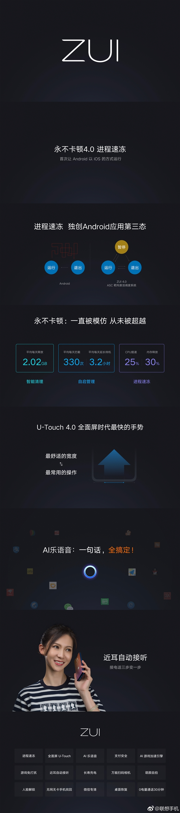

6月5日，联想Z5在北京发布。该机主打的是高颜值、高性价比。
其采用了6.2英寸刘海屏，屏幕纵横比为19:9，屏占比达到了90%，支持DCI-P3色域，亮度最高达到了700尼特。
背部为2.5D康宁玻璃，提供舒曼黑、极光色、卡侬蓝三种配色，颜值出众。
联想Z5的另一大亮点是高性价比，全系标配6GB内存，搭载高通骁龙636处理器，后置1600万+800万AI双摄，前置800万像素，电池容量为3300mAh，0电量还能通话半小时。
该机起售价为1299元（舒曼黑6GB+64GB），卡侬蓝、极光色版售价1399元（6GB+64GB），6GB+128GB版售价1799元（提供卡侬蓝、极光色）。
此外，联想Z5预装的ZUI系统也是亮点所在。
该系统主打“永不卡顿”，提供U-Touch 4.0全面屏手势操作，新增AI乐语音，一句话实现语音操控，支持近耳自动接听等等。
